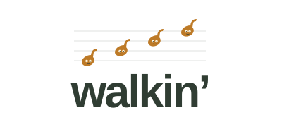

見て、押さえる。
コード進行からTABを生成。弦番号とフレット、左手の指の目安を確認できます。1拍ずつ進めて、動きをゆっくり追うことも。
TAB ＋ 運指ガイド
ウォーキングベースの練習帳
コード進行から、運指の目安つきTABを。
聴いて、弾いて、ひとつ変えて。
自分のベースラインを見つける練習帳です。
登録不要 · ブラウザで練習 · PC画面がおすすめ
D弦 3フレット · 小指で押さえる案
WHAT IS WALKING BASS?
拍に合わせて音をつなぎ、コードの響きと次へ進む流れをつくる。それが、ウォーキングベースです。
「次はどの音？」「どこを押さえる？」を、音とTABで確かめながら。Walkin'では4弦ベースの4/4拍子・1拍1音から練習できます。
01 / できること
見るだけ、聴くだけで終わらない。少しずつ、自分で選べるように。
コード進行からTABを生成。弦番号とフレット、左手の指の目安を確認できます。1拍ずつ進めて、動きをゆっくり追うことも。
TAB ＋ 運指ガイドベースのお手本を聴き、ピアノやドラムと一緒に練習。テンポを落としたり、苦手な小節だけ繰り返したりできます。
音つき再生 ＋ 区間ループ選んだ音を指板で変更。なぜその音を使うのかを読み、お手本と聴き比べながら、自分の好きなつながりを探せます。
音の編集 ＋ 役割の説明02 / 使い方
ベースを手元に置いたら、ゆっくりしたテンポで始めましょう。
曲の一覧から選ぶか、コード進行を入力。難易度を「簡単」、長さを4小節にすると取り組みやすくなります。
「ラインをつくる」でTABを生成。「▶」で聴き、指板の目安を見ながら、ひとつずつ音を確かめます。
「自分で変える」で指板をクリック。次の音まで聴き比べて、気に入った練習は保存しておきましょう。
03 / はじめる前に
TABは、どの弦の何フレットを押さえるかを数字で示す譜面です。弦番号と太さの表示もあるので、まずは1音ずつ場所を確認できます。数字の「0」は開放弦です。
運指は、手の移動や弦飛びを考慮した目安です。手の大きさや弾き方に合わせて、押さえやすい指に替えてください。お手本のラインも、音楽的な答えのひとつです。
お手本の音を聴く、コードと音の役割を読む、指板で音を変えて聴き比べる、といった使い方もできます。音は練習画面で再生ボタンを押すと鳴ります。
どちらも不要です。ブラウザで使えます。練習は使っているブラウザ内に保存され、別の端末へは自動同期されません。大切な練習はJSONで書き出して残せます。
ONE NOTE AT A TIME.
まずは、お手本の1小節を聴いてみましょう。
始める